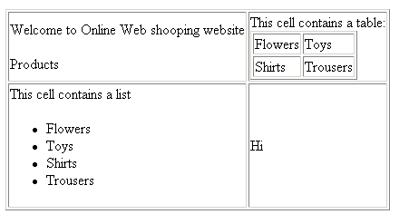

Understanding the foundation of nested lists and tables.
Tables are used to arrange data in rows and columns. HTML provides tags
like
<table>, <tr>,
<td>, and <th>
for creating tables.
Rows are created with <tr> and columns with
<td>.

A simple 2x2 table:
The <table> tag defines the start and end of a table.
The <td> tag defines a single data cell inside a row.

Borders make the table clearer. You can use the
border attribute in the <table> tag.

The <tr> tag defines a complete row in a table.
The <th> tag defines a header cell (bold & centered
by default).
HTML allows dividing tables into <thead>,
<tbody>, and <tfoot> sections.

<table> → Table<tr> → Table Row<td> → Table Data<th> → Table Header
The colspan attribute allows a cell to span across multiple
columns.

The rowspan attribute allows a cell to span across multiple
rows.

A more advanced table with header, body, and footer combined with colspan and rowspan.

Sometimes we need to create a table inside a list or a list inside a table. This is called nesting.
A table cell can contain an unordered list:
